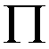

| Follow the above link or click the graphic below to visit the Homepage. |
 | Sums of Powers of the Natural Numbers Jim Cullen |
| inf | |||
| H = |  | 1 i | = infinity |
| i = 1 |
| n | ||
| H n = | | 1 i |
| i = 1 |
| n | |||
| H n = | | 1 i | = Psi( n + 1 ) - Psi( 1 ) |
| i = 1 |
| n | |||
| H n - Hm-1 = | | 1 i | = Psi( n + 1 ) - Psi( m ) |
| i = m |
| H n,2 | = | 1 ( 1 )2 | + | 1 ( 2 )2 | + | 1 ( 3 )2 | + | 1 ( 4 )2 | + | 1 ( 5 )2 | + . . . |
| H n,1 | = | 1 ( 1 )1 | + | 1 ( 2 )1 | + | 1 ( 3 )1 | + | 1 ( 4 )1 | + | 1 ( 5 )1 | + . . . |
| inf | ||||
| S2 = | | 1 i 2 | = | pi 2 6 |
| i = 1 |
|
|
|
| ||||||||||||
| Power ( p ) | Sum | Power ( p ) | Sum | |||||||||
| 1 | Psi0( n + 1 ) - Psi0( m ) 0 ! |
2 | Psi1( m ) - Psi1( n + 1 ) 1 ! | |||||||||
| 3 | Psi2( n + 1 ) - Psi2( m ) 2 ! |
4 | Psi3( m ) - Psi3( n + 1 ) 3 ! | |||||||||
| 5 | Psi4( n + 1 ) - Psi4( m ) 4 ! |
6 | Psi5( m ) - Psi5( n + 1 ) 5 ! | |||||||||
| 7 | Psi6( n + 1 ) - Psi6( m ) 6 ! |
8 | Psi7( m ) - Psi7( n + 1 ) 7 ! | |||||||||
| ||||||||||||
| Power ( p ) | Sum | Power ( p ) | Sum | |||||||||
| 1 | - Psi0( m ) 0 ! |
2 | Psi1( m ) 1 ! | |||||||||
| 3 | - Psi2( m ) 2 ! |
4 | Psi3( m ) 3 ! | |||||||||
| 5 | - Psi4( m ) 4 ! |
6 | Psi5( m ) 5 ! | |||||||||
| 7 | - Psi6( m ) 6 ! |
8 | Psi7( m ) 7 ! | |||||||||
| ||||||||||||
| Power ( p ) | Sum | Power ( p ) | Sum | |||||||||
| 1 | - Psi0( 1 ) 0 ! |
2 | Psi1( 1 ) 1 ! | |||||||||
| 3 | - Psi2( 1 ) 2 ! |
4 | Psi3( 1 ) 3 ! | |||||||||
| 5 | - Psi4( 1 ) 4 ! |
6 | Psi5( 1 ) 5 ! | |||||||||
| 7 | - Psi6( 1 ) 6 ! |
8 | Psi7( 1 ) 7 ! | |||||||||
| For even integer p > 0 | |
| ZR( p ) = | 2 p-1 abs( Bp ) pi p p ! |
| inf | ||||
| ZR( p ) = | | 1 i p | = | (-1) p . Psip-1( 1 ) ( p - 1 ) ! |
| i = 1 |
| inf | ||||
| ZH( p , a ) = | | 1 ( i + a ) p | = | (-1) p . Psip-1( a ) ( p - 1 ) ! |
| i = 0 |
| inf | ||
| ZR( s ) = |  | 1 1 - ( P k ) - s |
| k = 1 |
| inf | |||
| B 2 n = | 2 . ( -1 ) n-1 . ( 2 n ) ! ( 2 pi ) 2 n | | P -2n |
| P = 1 |
| for even integer n > 38 | |
| B n = | 2 . n ! . ( - 1 ) ( n/2-1 ) ( 2 pi ) n |
| Psi 0 ( x ) = | ln ( x 2 - x ) 2 | + | 1 6 x 2 - 6 x +1 |
| Psi 0 ( x + 1 ) = Psi 0 ( x ) + x -1 |
| Psi 0 ( - x ) = Psi 0 ( x ) + pi / tan [ pi ( x + 1 ) ] |
| Psi 0 | = | ln ( x ) | - | 1 2 x | - | 1 12 x 2 | + | 1 120 x 4 | - | 1 252 x 6 | + | 1 240 x 8 | - | 1 132 x 10 | + . . . |
| inf | ||||
| Psi 0 ( x ) = ln ( x ) - | 1 2 x | - | | B 2 k 2 k . x 2 k |
| k = 1 |
| Besides the standard texts, perhaps the greatest online mathematical resource is Wolfram's Mathworld, from the makers of Mathematica software. Hardware support for much of the work on this page includes: Texas Instruments' Voyage-200 PLT ( 12MHz M68000 CPU ) for summations, algorithmic work, numerical analysis, and some algebraic operations with the help of Bhuvanesh Bhatt's Mathtools calculator software; Hewlett-Packard's HP50G ( 75MHz ARM CPU ) for summations and some algebraic operations involving advanced functions; Microsoft Quick-Basic Ver4.5 for generation of tables of high-speed numeric sums and cross-checking. The best stuff, as always, is worked out on pencil and paper ( CPU supplied by user ). |